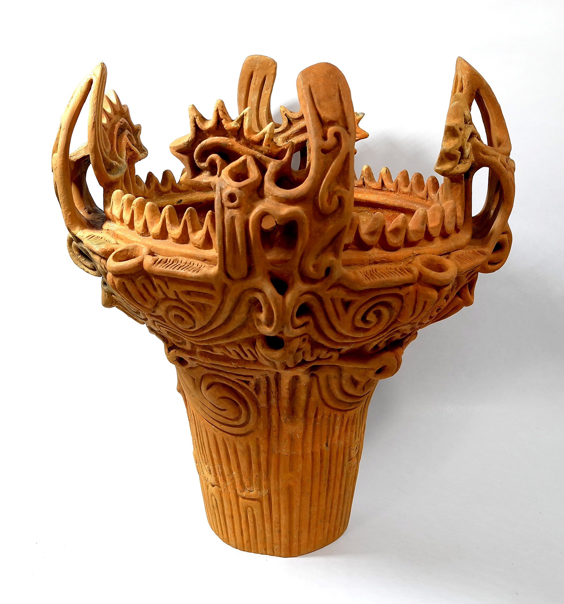
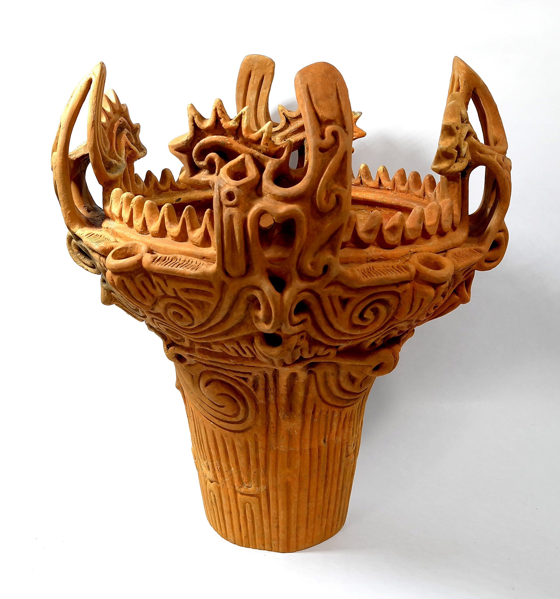

自己紹介
はじめまして。CRM Unitの佐々木輔です。
前職ではEC運用やWEB広告を担当し、韓国ブランドや古着系ECなどのデータ分析を行っていました。
現在は、より多面的に顧客理解を深めることを目指しています。
経験・スキル
- ECサイトの売上分析・改善提案
- 販売データの活用とレポーティング
- マーケティング施策の仮説設計と検証
趣味
趣味は陶芸と南インド料理。
パートナーが陶芸家なので、作品撮影や発信を一緒に行っています。
休日はスパイス調合やカレー屋巡りを楽しんでいます。


 
